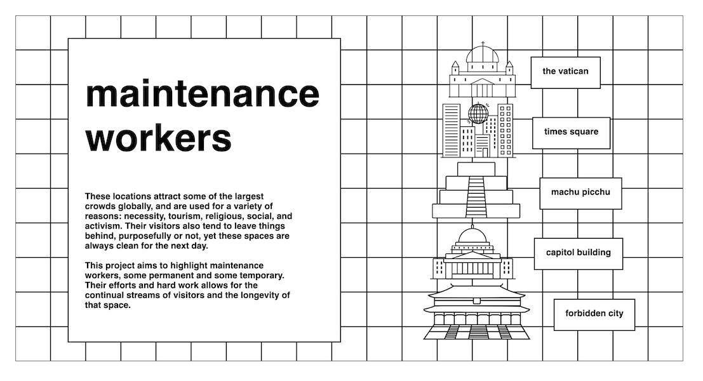
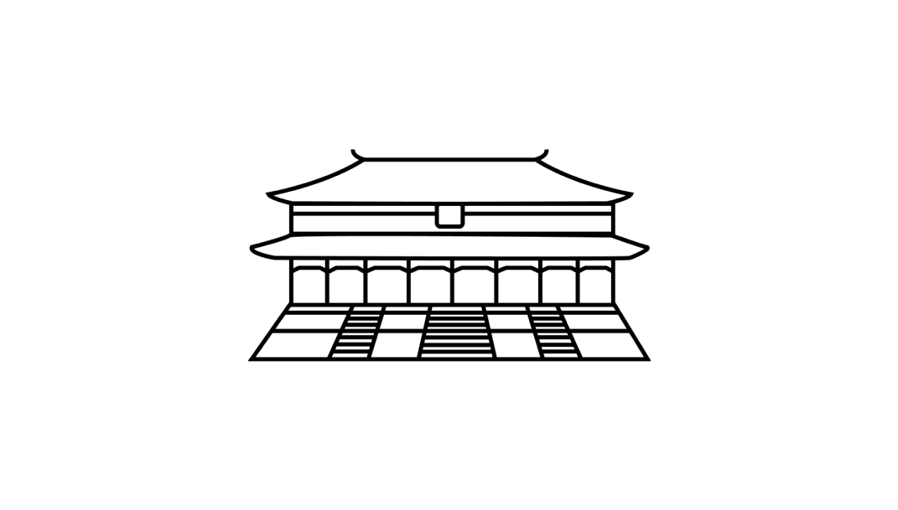
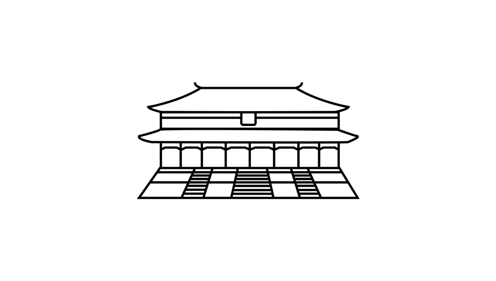

02. FAN PAGE
Maintenance Workers
HTML & CSS
These locations attract some of the largest crowds globally, and are used for a variety of reasons: necessity, tourism, religious, social, and activism. Their visitors also tend to leave things behind, purposefully or not, yet these spaces are always clean for the next day.
This project aims to highlight maintenance workers, some permanent and some temporary. Their efforts and hard work allows for the continual streams of visitors and the longevity of that space.

 



Icons made for the Capitol Building, Forbidden City, Machu Picchu, and Times Square
Times Square
Every year, excluding this year, an estimated one million people stand in the streets of Times Square, waiting for the ball to descend. Just minutes after the ball descends and confetti is released, the streets are emptied, and about 178 sanitation workers begin cleaning up. With 26 mechanical brooms, 25 trucks, 38 leaf blowers, and other assorted equipment, it takes between 7 and 12 hours to clean up all 2,000 pounds of confetti and litter.
Sources: Mashable, gothamist, and Untapped Cities
Tools: HTML, CSS, Adobe Illustrator
Machu Picchu
Annually, Machu Picchu gets over half a million visitors and over 2,500 visitors every day. These numbers have proven to be too high to be sustainable, causing visitors and the local Andean community to find ways to work together maintain the area. The sanctuary has a team of 15 permanent maintenance workers, and volunteers make biweekly trips to restore trails, clean stone walls, and remove markings carved into stone.
Sources: Sam Travel Peru, Alpaca Expeditions
Tools: HTML, CSS, Adobe Illustrator
Capitol Building
After the breach on the Capitol Building on January 6, 2021, the custodial staff was joined by veterans and New Jersey Representative Andy Kim to clean up the interior building and the nearby streets. Many of these workers were BIPOC, sweeping broken glass, removing posters with hate speech, and replacing the broken furniture. Additionally, veteran David Smith created a volunteer group to remove pro-Trump paraphernalia and scrape off adhesive signs with neo-Nazi and various alt-right groups.
Sources: Washington Post, ABC7 News, and The Cut
Tools: HTML, CSS, Adobe Illustrator
Forbidden City
The Forbidden City in Beijing, China receives almost 10,000 foreign and local tourists daily, and their maintenance team consists of 24 toilet cleaners. Each day, they work from 9:30am to 4:30pm, with one 8 minute lunch break, cleaning almost non-stop. In addition to these workers, stray cats are also adopted, fed, and vaccinated in order to prevent rodents.
Sources: BBC News and China Daily
Tools: HTML, CSS, Adobe Illustrator